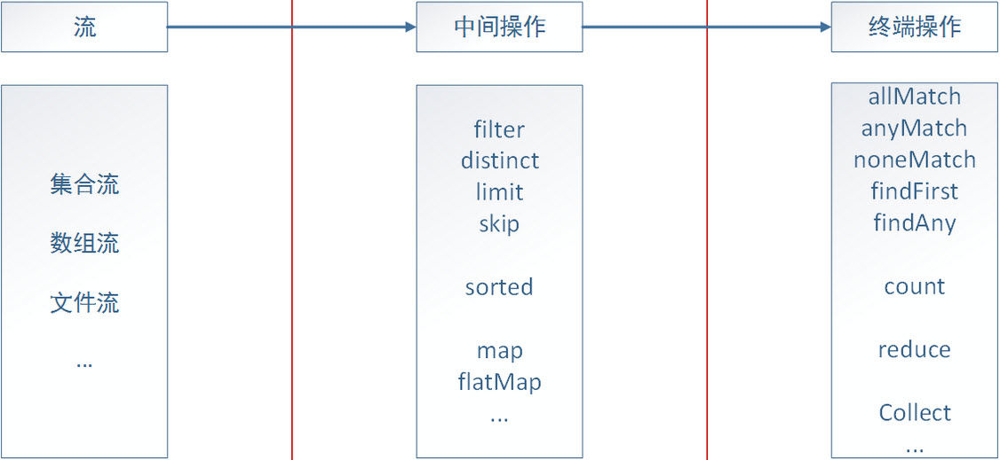
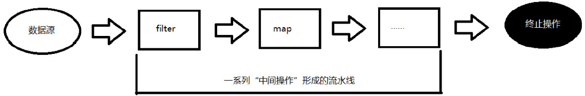
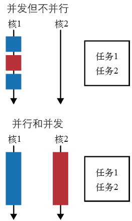

简述
Java 8发行版是自Java 5（发行于2004，已经过了相当一段时间了）以来最具革命性的版本。Java 8我认为带来的最核心的变化主要体现在三个方面：Lambda(函数式编程)、Stream(流)和并发/并行编程简易化。其中Lamdba特性是最具革命性，为Stream、并行/并发编程等新特性提供基础支撑。
Java 8所做的改变，在许多方面比Java历史上任何一次改变都深远，为古老渐显疲态的Java注入新的活力：
1、lambda:最具革命性的新特性，直观上看：代码量大大减少，程序逻辑也清晰明了，可以编写出简单、干净、易读的代码；深层原因：函数式编程思想的风靡流行
2、Stream(流):Lambda和集合结合的产物，也让Lambda函数式编程这一酷炫技术得到很好展现的一个新特性， 是Java 8带给我们最核心、最实用的一个特性
3、并发/并行:借助于lambda、Stream和ForkJoin、CompletableFuture等新特性，让并发/并行编程更加简单
Lambda
概述
Lambda表达式并不是Java 8新出的概念，最近几年lambda表达式早已风靡于编程界，很多现代编程语言都把它作为函数式编程的基本组成部分，像Scala、Groovy等早已开始支持Lambda表达式语法。而且实践证明：让函数作为一等公民(Java是面向对象编程，只有对象是一等公民可以进行任意的传递，不过lambda底层实现依然采用的是对象封装实现的，因此，lambda可以看成是Java 8提供给程序员的一种”语法糖”)可以扩充程序员的工具库，从而让代码量大大减少、程序逻辑更清晰明了，编写出简单、干净、易读的代码，最终实现编程简单轻松和提高开发人员效率。
让Java实现一种尽可能轻量级的将代码封装为数据（Model code as data）的方法，这就是lambda表达式最本质的需求，用专家更精简的说法是：让行为参数化。
我们知道，Java作为一门面向对象的语言：在Java世界里，一切皆对象。在Java 8之前，Java专家们使用接口中的一个方法来封装对象行为进行参数传递，如可能存在如下情况：
1 | button.addActionListener(new ActionListener) { |
使用接口方法定义行为，然后通过匿名类方式实现行为传递，但通常非常臃肿，既难于编写，也不易于维护。这种方案并不令人满意：冗余的语法会影响程序员在实践中使用行为参数化的积极性。像上面例子一样，真正有用的代码就只有一句：ui.dazzle(e.getModifiers())，而大量模板式的“噪点”代码充斥其中使代码复杂化，结构不够清晰。Java 8引入的lambda就是对这一问题很好的解决，通过向方法传递代码片段来解决这一问题，让你很简洁地对一个行为进行参数化并传递：
1 | button.addActionListener(e -> ui.dazzle(e.getModifiers())) |
###案例
1 | 采用lambda可以轻松实现行为参数化，这样在接口设计的时候可以更抽象化、灵活性更高，如下： |
方法引用
1 | 若Lambda体中的内容有方法已经实现了，我们可以使用方法引用，可以理解为：方法引用是Lambda表达式的另外一种表现形式，对一类特殊的lambda表达式进一步进行简化。 |
构造器引用
1 | 构造器引用，类似于方法引用: |
Stream
概述
lambda函数式编程完善了面向对象编程的不足，可以实现更抽象、更灵活的接口，从而让代码质量更加高效。对于lambda表达式我们理解到这点基本就足已，因为它还是比较简单的，真正核心的地方是lambda表达式与流式思想的结合。
Stream就是这样一个lambda表达式与流式思想的结合的产物，是lambda表达式作为流式思想实现的一个很好方案的展现。Stream的本质你可以这么理解：Stream就是将一系列lambda表达式进行串联形成一条数据处理流水线，实现通过各个lambda表达式间相互协作最终完成复杂的业务处理。Stream让传统的面向“存储” 的集合，具有了面向“计算”的能力。Java 8引入的Stream我认为是对开发人员来讲是实用性最好、使用率最高的一项特性，因为对数据集合的操作在日常开发中扮演着越来越重要的地位。
Stream意义
传统的项目开发，基本上数据都会存储在关系型数据库如MySQL或Oracle中，利用关系型数据库提供的丰富内置函数，可以帮助完成各种数据处理工作，因此，传统的开发更多的是面向数据库编程。然后，现在是一个信息数据爆炸的时代，数据来源五花八门导致数据格式也不在是传统的以结构化数据为主的特点，而是非结构化、半结构化数据越来越多，这就对数据处理的需求更多、处理手段要更加灵活。而且数据规模越来越大，传统的关系型数据库已经无法满足需要，所以出现现在NoSQL遍地开花的局面。NoSQL数据库主要解决的核心关注点“海量数据存储和高效数据检索”，而和关系型数据库核心关注点“强一致性和强大的数据处理功能”是不一致的。这两方面的变化导致了现在越来越多的项目已将数据处理的需求移植到了程序开发中，数据处理和并发编程在日常开发中需求量大增。
传统的Java集合操作提供的API接口只有基本的功能性接口，比如：新增元素、删除元素、集合大小、集合iterator迭代，缺少面向实际业务层面更高层次的抽象接口，而Stream就是解决了传统集合操作的不足，使程序员得以站在更高的抽象层次上对集合进行操作。
Stream实现了类似SQL语法样式，使用声明式的类似描述性语言，有效帮助开发人员构建高质量、高性能的数据处理平台，挖掘出真正的商业价值，让“大数据”发挥出强大的威力。
案例
1 | 案例一: |
1 | 案例二：基本集合操作案例(出至《Java8函数式编程》) |
进一步延伸
Storm中的Bolt、Spark中的算子和Java 8中的lambda，它们的思想和UNIX中的管道、责任链和pipeline模式中封装的处理单元是很类似的：对数据的处理封装成一个个处理单元，然后根据业务需要组装成一个线性或非线性链表或DAG(有向无环图)，让数据像水流一样沿着这个有向无环图经过处理单元进行层层过滤、处理。这是一种非常实用的经典计算模型或叫编程思想，有一句话很能体现这种思想的价值：“如果说Unix是计算机文明中最伟大的发明，那么，Unix下的Pipe管道就是跟随Unix所带来的另一个伟大的发明”。它体现的哲学思想：”Do one thing, Do it well”，程序应该只关注一个目标，并尽可能把它做好，让程序能够互相协同工作完成复杂任务。
Storm、Spark计算模型的强大以及Java 8中lamdba简洁性，让我们看到：虽然它们和传统的管道、责任链、Pipeline等模式在底层思想上如此的一致，但是在技术上还是向前迈出了很大一步，这就是技术积累进步的力量。
也再次印证了：火热的大数据时代让这一编程思想再次受到人们的关注，Java 8中及时引入lambda函数式编程，不在简简单单认为只是一种酷炫、装逼神器，而是一种迫切的真实需求体现，是顺应潮流的必然结果。
声明式编程
一般通过编程实现一个系统，有两种思考方式。一种专注于如何实现，比如：“首先做这个，紧接着更新那个，然后……”举个例子，如果你希望通过计算找出列表中最昂贵的事务，通常需要执行一系列的命令：从列表中取出一个事务，将其与临时最昂贵事务进行比较；如果该事务开销更大，就将临时最昂贵的事务设置为该事务；接着从列表中取出下一个事务，并重复上述操作。这种“如何做”风格的编程非常适合经典的面向对象编程，有些时候我们也称之为“命令式”编程，因为它的特点是它的指令和计算机底层的词汇非常相近，比如赋值、条件分支以及循环，就像下面这段代码：
1 | Transaction mostExpensive = transactions.get(0); |
这个查询把最终如何实现的细节留给了函数库。我们把这种思想称之为内部迭代。它的巨大优势在于你的查询语句现在读起来就像是问题陈述，由于采用了这种方式，我们马上就能理解它的功能，比理解一系列的命令要简洁得多。
采用这种“要做什么”风格的编程通常被称为声明式编程。你制定规则，给出了希望实现的目标，让系统来决定如何实现这个目标。它带来的好处非常明显，用这种方式编写的代码更加接近问题陈述了。
在声明式编程语言中最为我们所熟知的是SQL，这个被称为第三代半或第四代编程语言取得了巨大成功，很重要的一点：它可以使用声明式语言，而不必关注具体实现细节。这一特性让它的使用及其简单，也成为它广受欢迎的关键。
Stream遵循”做什么，而不是怎么去做”的原则，可以看成lambda函数式编程对声明式编程的具体实践：你只需要使用不相互影响的表达式，描述想要做什么，由系统来选择如何实现。你可以使用Stream将几个操作串接在一起，表达一个复杂的操作，这些都是函数式编程语言的特性。
并行流
并行化操作流只需改变一个方法调用。如果已经有一个Stream对象，调用它的parallel方法就能让其拥有并行操作的能力。如果想从一个集合类创建一个流，调用
parallelStream就能立即获得一个拥有并行能力的流，非常的简单就实现了并行化编程。并行流就是一个把内容分成多个数据块，并用不同的线程分别处理每个数据块的流。这样一来，你就可以自动把给定操作的工作负荷分配给多核处理器的所有内核，让他们都忙起来。
并行流内部使用了默认的ForkJoinPool，它默认的线程数量就是你的处理器数量，这个值是由Runtime.getRuntime().availableProcessors()得到的。但是你可以通过系统属性java.util.concurrent.ForkJoinPool.common.parallelism来改变线程池大小，如下所示：System.setProperty(“java.util.concurrent.ForkJoinPool.common.parallelism”,”12”);
这是一个全局设置，因此它将影响代码中所有的并行流。反过来说，目前还无法专为某个并行流指定这个值。一般而言，让ForkJoinPool的大小等于处理器数量是个不错的默认值，除非你有很好的理由，否则我们强烈建议你不要修改它。
当然，也可以通过自定义ForkJoinPool并指定并行度方式实现局部并行度修改，方式如下：
1 | public void test() throws Exception { |
这是一个多核的时代，并行流对提系统整体升性能是极具价值，最关键的是并行流和串行流间切换如此的简单，一个函数就可搞定，这是传统Java进行并行编程无法想象的。
Stream总结
java 8的流式处理极大的简化了对于集合的操作，实际上不光是集合，包括数组、文件等，只要是可以转换成流，我们都可以借助流式处理，类似于我们写SQL语句一样对其进行操作。java 8通过内部迭代来实现对流的处理，一个流式处理可以分为三个部分：转换成流、中间操作、终端操作。它们之间的区别就是：中间操作输出还是流，一般是用于对流中元素进行处理，而终端操作一般是聚合操作，用于获取最终的结果。如下图：


1 | 下面再通过一个案例再次体验下并行/并发编程方面Stream和传统编程巨大的区别 |
Stream性能分析
Stream接口可以让你不用太费力气就能对数据集执行并行操作。它允许你声明性地将顺序流变为并行流。可以通过对收集源调用parallelStream方法来把集合转换为并行流。并行流就是一个把内容分成多个数据块，并用不同的线程分别处理每个数据块的流。这样一来，你就可以自动把给定操作的工作负荷分配给多核处理器的所有内核，让它们都忙起来。
1 | 案例：累加求和 |
并发/并行编程
由于摩尔定律在处理器的时钟频率不断提升这一方式遇到了瓶颈，即单核CPU在性能上无法进一步获得有效提升，现在趋势是在横向上进行扩展，即无法获取更快的CPU核心，但是可以通过获取更多的CPU核心来提升性能，这就是所谓的多核时代的来临。由单核主频的提升到多核扩展这一硬件结构的转变，为了让你的代码运行得更快，需要你的代码具备并行运算的能力，可以让每个处理线程单独占据一个核，从而得到多倍的整体性能。
前面提到的并行流就是Java 8对并行编程一个很好的实践，但流类库提供的数据并行化只是其中的一种形式，下面会介绍Java 8在中并发/并行编程的其它手段。
并发/并行编程区别
并发是两个任务共享时间段，并行则是两个任务在同一时间发生，比如运行在多核CPU上。如果一个程序要运行两个任务，并且只有一个CPU 给它们分配了不同的时间片，那么这就是并发，而不是并行。两者之间的区别如下图：

CompletableFuture
Future接口是在Java5中被引入，设计初衷是对将来某个时刻会发生的结果进行建模，它建模了一种异步计算，返回一个执行运算结果的引用，当运算结束后，这个引用被返回给调用方。打个比方，你可以把它想象成这样的场景：你拿了一袋子衣服到你中意的干洗店去洗。干洗店的员工会给你张发票，告诉你什么时候你的衣服会洗好（这就是一个Future事件）。衣服干洗的同时，你可以去做其他的事情。Future的另一个优点是它比更底层的Thread更易用。要使用Future，通常你只需要将耗时的操作封装在一个Callable对象中，再将它提交给ExecutorService，就万事大吉了。下面这段代码展示了Java 8之前使用Future的一个例子。
1 | ExecutorService executor = Executors.newCachedThreadPool(); |
Stream与CompletableFuture结合案例
1 | 案例：最佳价格查询器(案例来源《Java8 实战》) |
CompletableFuture实现多个异步任务流水线式操作
1 | 上面介绍的主要是通过CompletableFuture及内置大量的工厂方法方便的实现异步接口，并结合Stream技术实现并发/并行编程，CompletableFuture实现的异步操作都是单任务操作。CompletableFuture类实现了CompletionStage和Future两个接口，一方面对传统的Future接口进行了增强，上面介绍的主要就是集中这个方面。下面就重点看下CompletionStage这个接口，它将流式思想引入到了并发/并行编程，让并发/并行编程具有了类似Stream的流水式操作的强大和灵活性，同时也降低了并发/并行编程的复杂性，这才是Java 8和之前并发/并行编程的一个本质区别。 |
Fork/Join
ForkJoin框架是在Java 7中引入的，即分支/合并框架，Stream并行流就是依赖ForkJoin将一个操作切分为多个子操作，在多个不同的核上并行地执行这些子操作，所以还是有必要简单认识下。
在ForkJoin框架出来之前，你要将任务拆解进行并发编程：
1、你得明确地把包含数据的数据结构分成若干子部分
2、你要给每个子部分分配一个独立的线程
3、你需要在恰当的时候对它们进行同步来避免不希望出现的竞争条件，等待所有线程完成，最后把这些部分结果合并起来
Java 7引入ForkJoin就是让这些操作更稳定、更不易出错，ForkJoin框架的原理：以递归方式将可以并行的任务拆分成更小的任务，然后将每个子任务的结果合并起来生成整体结果。它是ExecutorService接口的一个实现，它把子任务分配给线程池（称为ForkJoinPool）中的工作线程。
使用ForkJoin框架另一个好处就是：它实现了“工作窃取”机制，这种算法用于在池中的工作线程之间重新分配和平衡任务，直白的说就是：某个线程从其他队列里窃取任务来执行。假如我们需要做一个比较大的任务，我们可以把这个任务分割为若干互不依赖的子任务，为了减少线程间的竞争，于是把这些子任务分别放到不同的队列里，并为每个队列创建一个单独的线程来执行队列里的任务，线程和队列一一对应，比如A线程负责处理A队列里的任务。但是有的线程会先把自己队列里的任务干完，而其他线程对应的队列里还有任务等待处理。干完活的线程与其等着，不如去帮其他线程干活，于是它就去其他线程的队列里窃取一个任务来执行。而在这时它们会访问同一个队列，所以为了减少窃取任务线程和被窃取任务线程之间的竞争，通常会使用双端队列，被窃取任务线程永远从双端队列的头部拿任务执行，而窃取任务的线程永远从双端队列的尾部拿任务执行。
工作窃取算法的优点是充分利用线程进行并行计算，并减少了线程间的竞争，其缺点是在某些情况下还是存在竞争，比如双端队列里只有一个任务时。并且消耗了更多的系统资源，比如创建多个线程和多个双端队列。
案例
1 | ForkJoin框架编程的模板伪代码大致如下： |
总结
Java自上世纪90年代出现，到如今已20多年历史，这期间开发生态已发生了很大的变化，一方面，多核时代让并发/并行编程成为一个必须面临解决的问题；另一方面，非结构化、半结构化数据的大量涌现导致数据处理功能由传统的数据库处理移植到程序开发中需要解决的问题。而这两种潮流的转变都能通过使用函数式编程非常轻松地得到支持，Java 8及时的引入lambda、Stream、CompletableFuture等，将流式数据计算的思想带入了Java 8中，可以说是完成了一次华丽的转型。
到这里为止，对Java 8总结基本要完结了，前面讲了那么多，其核心思想我这里归纳成如下几点：
1、lambda函数式编程是对流式编程思想的一个很好解决方案，反过来，正是流式计算模型的兴起带动了lambda函数式编程近几年的风靡
2、Stream是对流式思想和lambda函数式编程结合进行的一次极佳实践，本质上是将一系列lambda表达式运用流式思想进行组装成一条数据处理链，以完成复杂的任务；同时，Stream带来的声明式编程方式让开发者通过类似描述性语言就可以实现复杂业务逻辑开发，极大的降低了编程的复杂性；总之，Stream让传统的面向“存储”的集合具有了面向“计算”的能力
3、CompletableFuture完成了将并发/并行编程和流式思想相结合的重要创新，再结合lambda函数式编程，很好的解决了并发/并行编程的复杂性导致开发积极性不高、后期维护难等问题，现在通过CompletableFuture可以简洁的实现灵活强大的并发/并行编程，为并发/并行编程成为开发常态提供了强大的技术支持手段
4、一方面，CPU进入多核时代与现有的并发/并行编程不足；另一方面，海量的半结构化、非结构化数据的出现与传统的面向数据库编程(通过关系型数据库提供的丰富的函数完成各种业务数据处理)冲突，Java 8通过流式思想和lambda函数式编程的引入都得以很好的解决了这两个问题
5、总之，Java 8是历年来改变最大一次，但其本质上要实现的目标是将流式计算模型引入，lambda表达式只不过是对这种模型引入提供了一种优雅的解决方案
本文重点不是教你怎么使用lambda、Stream、CompletableFuture等这些Java 8中的新特性，而是希望你能看清这些改变的意义及背后的思想是什么。不要再仅仅认为：这些新特性只是一种很酷炫的技术，也仅仅只是让开发中的一些代码变得简洁，仅此而已。我希望：当你深入了解这些新特性背后的哲学、思想后，应该认识到这就是一种潮流，一种真实需求的体现。
最后用我一个切身感受结束：没有使用Lamdba之前，你可能永远都不想使用它，因为怪异的语法与现有的面向对象编程格格不入，但是当你开始熟悉并深入使用它后，你会迷恋上它。